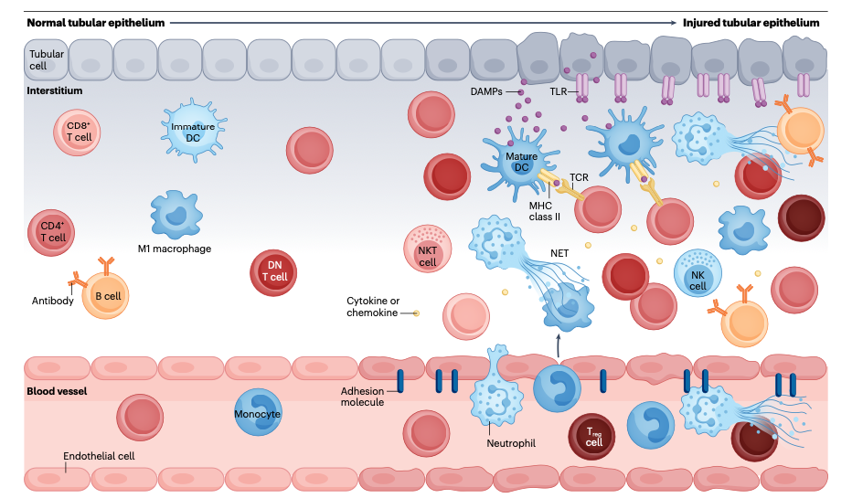
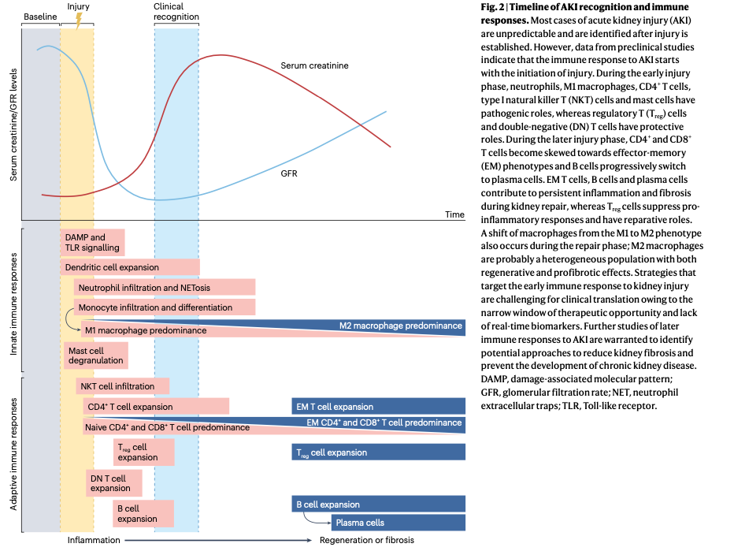

Lymphocytes and innate immune cells in acute kidney injury and repair
Abstract
- Complex intrarenal inflammatory processes driven by lymphocytes and innate immune cells have key roles in the development and progression of AKI.
- CD4+and CD8+ T cells, B cells and neutrophils are probably involved in the development and progression of AKI
- regulatory T cells, double-negative T cells and type 2 innate lymphoid cells have protective roles
- Several immune cells, such as macrophages and natural killerT cells, can have both deleterious and protective effects, dependingon their subtype and/or the stage of AKI
Introduction

- resident immune cells initiate a rapid inflammatory response that leads to recruitment of circulating immune cells through the damaged vascular endothelium
- mature dendritic cells that promote T cell activation and maturation
- Innate immune cells, including neutrophils and natural killer (NK) cells, contribute to tissue damage and activate adaptive immune cells
- T cells have crucial roles in the pathogenesis of early kidney injury via the secretion of pro-inflammatory cytokines and orchestration of innate and adaptive immune response
❓ pro-inflammatory 와 anti-inflammatroy의 차이
- Pro-inflammatory (염증 촉진) 반응 : 염증 유발/촉진
- Macrophage, Neutrophil, T Cell과 같은 면역 세포들이 활성화되어 감염된 부위로 이동
- Anti-inflammatory (항염증) 반응: 염증 억제/완화
- Regulatory T Cells, Type 2 Helper T Cells,B Regulatory Cells와 같은 염증 매개체의 생산을 억제하거나 염증 반응을 억제
Key points
- Robust intrarenal inflammatory processes driven by lymphocytes
- CD4+ T cells, B cells, neutrophils, M1 macrophages and type I natural killer T cells mainly exert pro-inflammatory roles in AKI
- regulatory T cells, double-negative T cells, regulatory B cells and type 2 innate lymphoid cells have anti-inflammatory roles.
- T 세포는 초기 염증 반응에 기여
| 세포 유형 | 주요 기능 및 역할 | 추가 정보 |
| B Cells | - 다른 면역 세포에 영향을 미치는 사이토카인과 케모카인을 생성 | - CCL7을 분비해 호중구와 단핵구가 손상된 신장으로 유입되도록 도움 - CCL2를 통해 단핵구와 대식세포를 손상된 신장으로 유도 |
| Natural Killer (NK) Cells | - 단백분해효소와 구멍 형성 단백질을 보유한 대형 과립 림프구 - 손상된 세포를 인식 | - IFNγ와 TNF의 주요 공급원으로, 수지상세포, 대식세포, T 세포를 활성화 |
| Neutrophils | - 선천 면역의 주요 효과 세포 - IRI 후 신장 간질로 유입되어 혈관에서 이주 | - ICAM1, VCAM1, 셀렉틴 등의 접착 분자를 통해 내피 세포에 부착 |
| Macrophages | - 순환 중인 단핵구가 CCR2와 CX3CR1 경로를 통해 손상된 신장으로 신속히 유입되어 대식세포로 분화 | - 손상 부위에 있는 대식세포는 M1 또는 M2 표현형으로 활성화 가능 |
